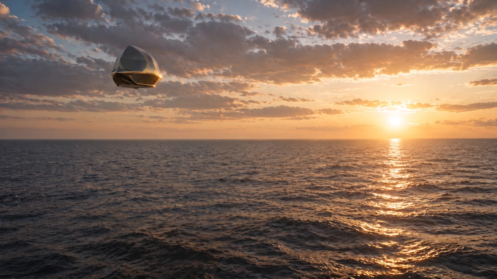
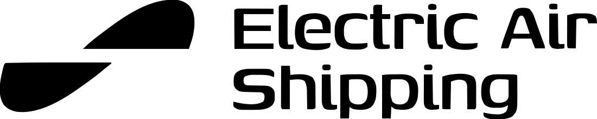
The sustainable middle option for global freight.
And a first step toward much more. Join us.
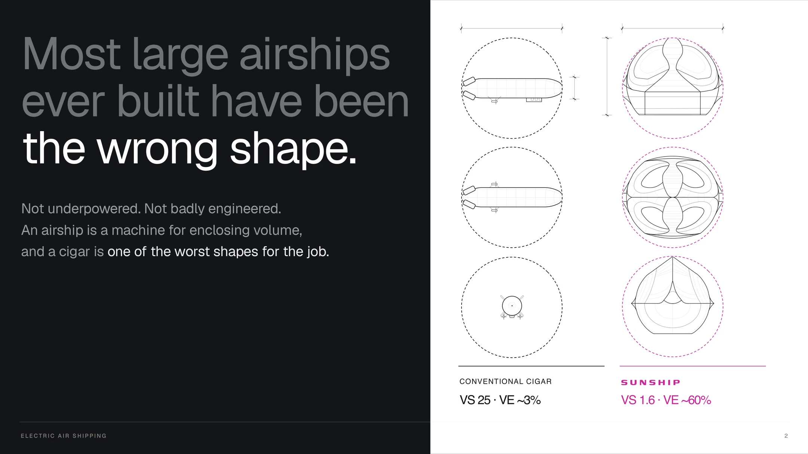
Most large airships ever built have been the wrong shape.
Not underpowered. Not badly engineered. An airship is a machine for enclosing volume, and a cigar is one of the worst shapes for the job.
Conventional cigar: VS 25, volume efficiency about 3%. Sunship: VS 1.6, volume efficiency about 60%.
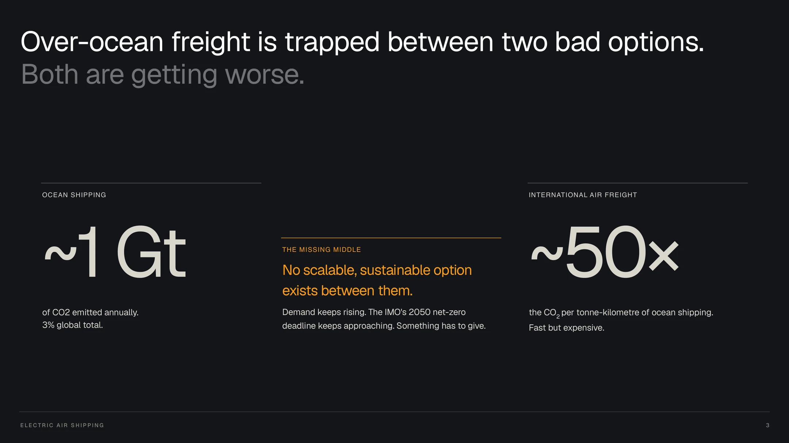
Over-ocean freight is trapped between two bad options. Both are getting worse.
- Ocean shipping: about 1 gigatonne of CO2 emitted annually — 3% of the global total.
- International air freight: about 50 times the CO2 per tonne-kilometre of ocean shipping. Fast but expensive.
- The missing middle: no scalable, sustainable option between them.
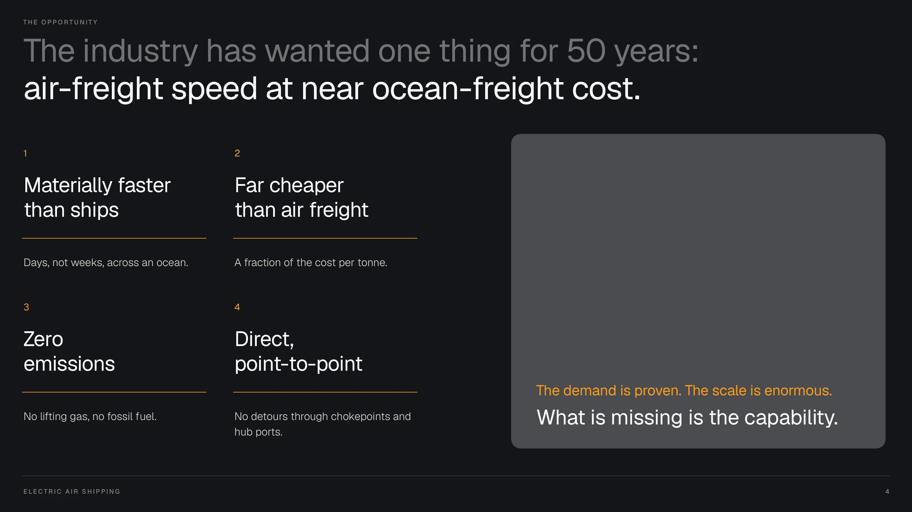
The industry has wanted one thing for 50 years: air-freight speed at near ocean-freight cost.
- Materially faster than ships — days, not weeks, across an ocean.
- Far cheaper than air freight — a fraction of the cost per tonne.
- Zero emissions — no lifting gas, no fuel burn.
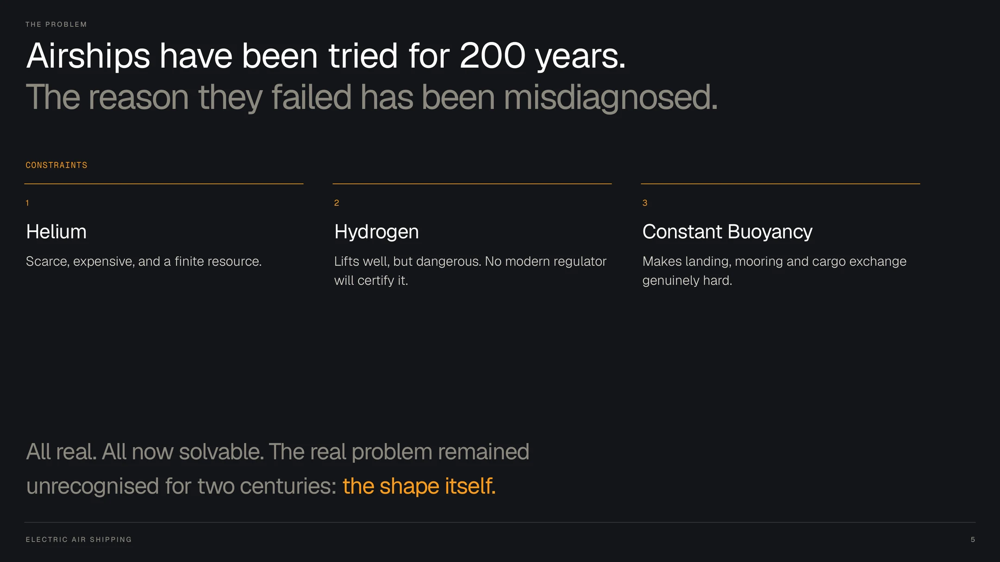
Airships have been tried for 200 years. The reason they failed has been misdiagnosed.
- Helium — scarce, expensive, and a finite resource.
- Hydrogen — lifts well, but dangerous. No modern regulator will certify it.
- Constant buoyancy — makes landing, mooring and cargo exchange genuinely hard.
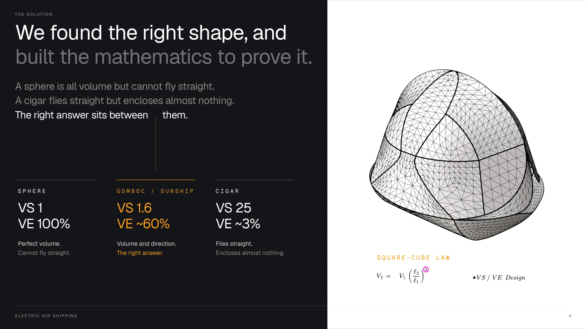
We found the right shape, and built the mathematics to prove it.
A sphere is all volume but cannot fly straight. A cigar flies straight but encloses almost nothing. The right answer sits between them: the gömböc-like Sunship form — VS around 1.6, volume efficiency around 60%.
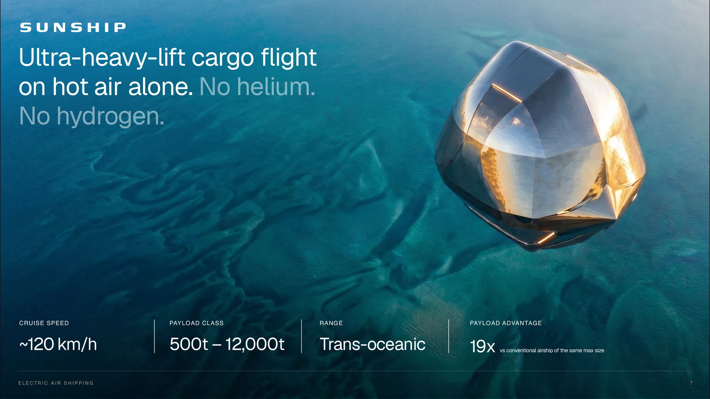
Ultra-heavy-lift cargo flight on hot air alone. No helium. No hydrogen.
- Cruise speed: about 120 km/h.
- Payload class: 500 to 12,000 tonnes.
- Range: trans-oceanic.
- Payload advantage: 19× a conventional airship of the same maximum size.
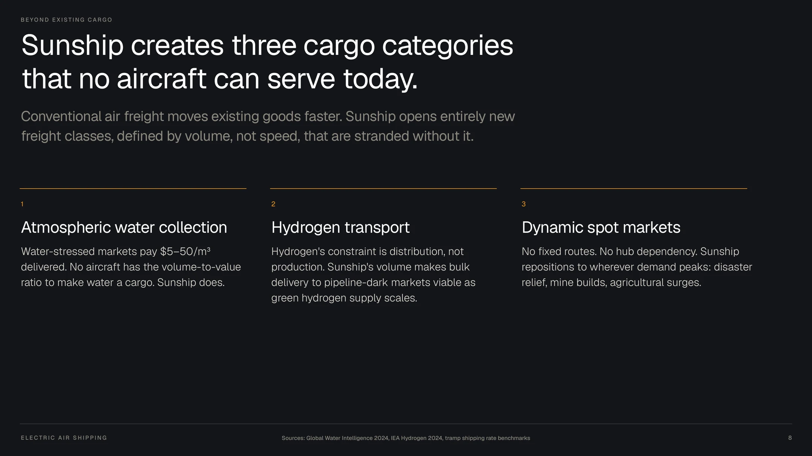
Sunship creates three cargo categories that no aircraft can serve today.
Conventional air freight moves existing goods faster. Sunship opens entirely new freight classes, defined by volume, not speed.
- Atmospheric water collection — water-stressed markets pay $5–50 per cubic metre delivered. No aircraft has the volume-to-value ratio to make water a cargo.
- Hydrogen transport — hydrogen's constraint is distribution, not production; bulk delivery to pipeline-dark markets becomes viable as green supply scales.
- Dynamic spot markets — no fixed routes, no hub dependency: disaster relief, mine builds, agricultural surges.
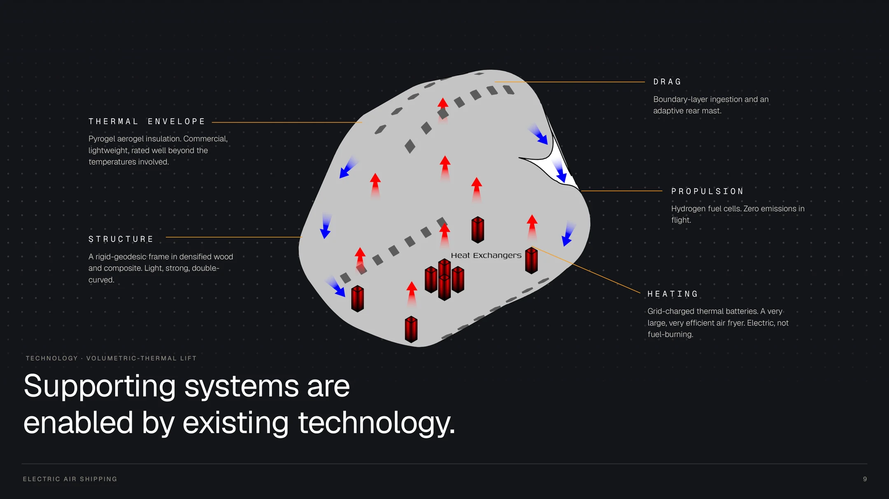
Supporting systems are enabled by existing technology.
- Thermal envelope — Pyrogel aerogel insulation: commercial, lightweight, rated well beyond the temperatures involved.
- Heating — grid-charged thermal batteries. A very large, very efficient air fryer. Electric, not fuel-burning.
- Structure — a rigid-geodesic frame in densified wood and composite.
- Propulsion — hydrogen fuel cells. Zero emissions in flight.
- Drag — boundary-layer ingestion and an adaptive rear mast.
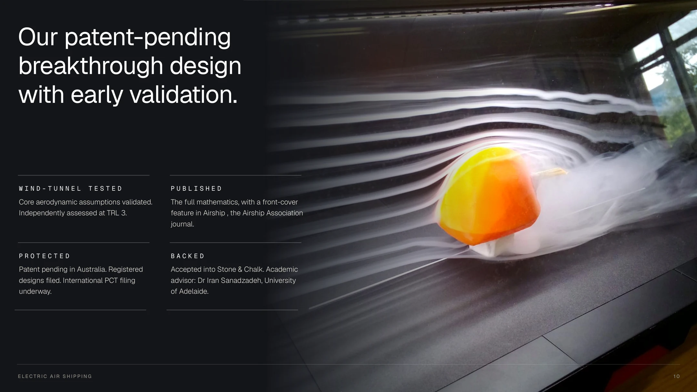
Our patent-pending breakthrough design, with early validation.
- Wind-tunnel tested — core aerodynamic assumptions validated; independently assessed at TRL 3.
- Published — the full mathematics, with a front-cover feature in Airship, the Airship Association journal.
- Protected — patent pending in Australia, registered designs filed, international PCT filing underway.
- Backed — accepted into Stone & Chalk; academic advisor Dr Iran Sanadzadeh, University of Adelaide.
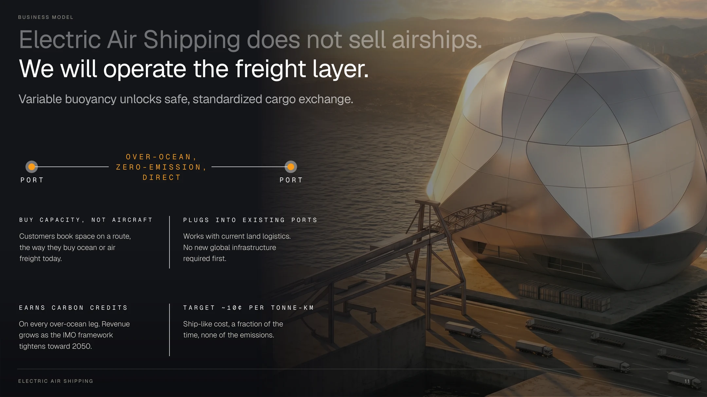
Electric Air Shipping does not sell airships. We will operate the freight layer.
- Buy capacity, not aircraft — customers book space on a route, the way they buy ocean or air freight today.
- Plugs into existing ports — works with current land logistics; no new global infrastructure required first.
- Earns carbon credits on every over-ocean leg, growing as the IMO framework tightens toward 2050.
- Target around 10¢ per tonne-km — ship-like cost, a fraction of the time, none of the emissions.
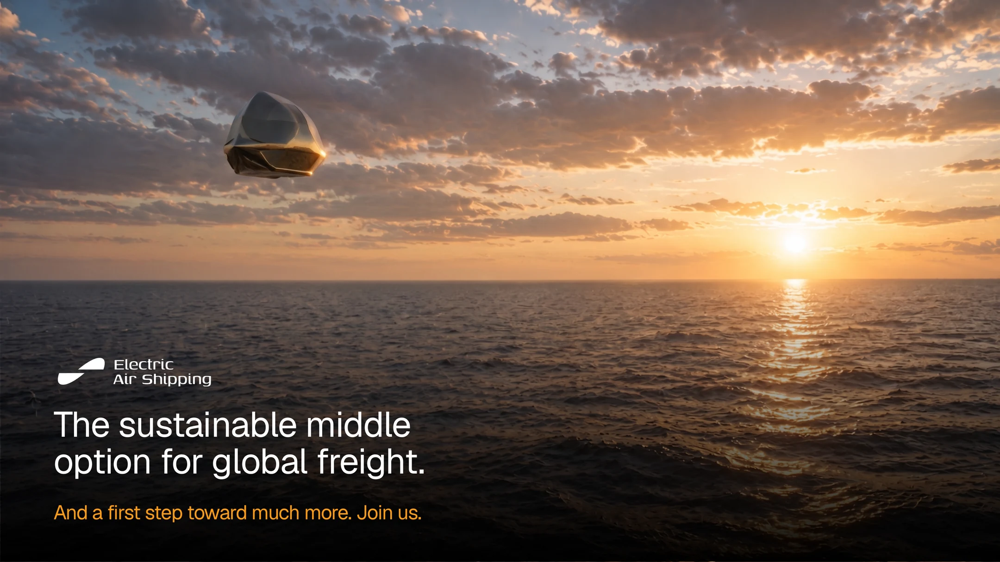
The sustainable middle option for global freight.
And a first step toward much more. Join us.